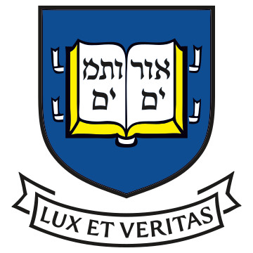
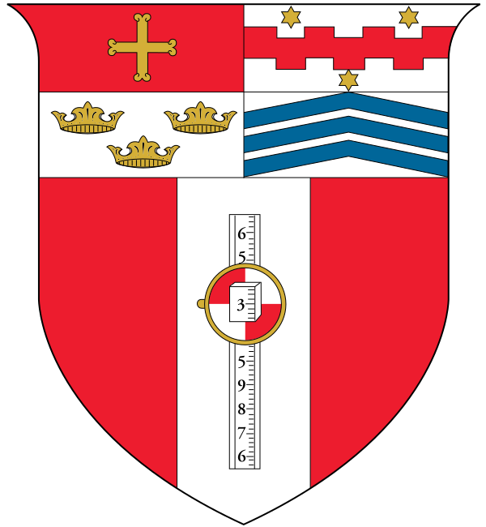

Dan Leyzberg
Soon-to-be Lecturer, Department of Computer Science, Princeton University (Starting Fall 2014)
Education
Ph.D. Computer Science, Yale University, 2014 (in progress)
M.S. Computer Science, Yale University, 2009
B.S. Computer Science & Mathematics, Rensselaer Polytechnic Institute, 2007
Teaching
This will be my first semester at Princeton. I will be precepting for COS 126. I'll also be working on some software tools for computer science education that will, hopefully, one day be used by thousands of students all over the world. If you're interested in changing the way high schoolers learn to program, contact me!
Before I came to Princeton, while I was still working on my Ph.D., I taught high school computer science classes part-time for six years at Hamden Hall Country Day School. I taught "AP Computer Science" (my old syllabus) -- which covers about 40% of the material in COS 126. I also taught an introductory course similar to COS 109 called "Computer Science Principles," which was inspired by the new AP course of the same name currently in development at the College Board. Over the summers, I taught an "Introduction to Robotics" class for grades 4-8.
Mentoring
Sam Spaulding joined the Social Robotics Lab as a Yale freshman in 2010 and collaborated with me on a number of projects and papers. He presented one of our papers at the prestigious Human Robot Interaction conference in 2014. He also did very well on Jeopardy, Millionaire. Sam is currently in graduate school at the MIT Media Center.
Jenny Liu was a junior at Amity High School when she first walked into the Yale Social Robotics Lab. She contributed to one of my earliest projects in grad school. Her name was on the resulting publication, and she won 9th place at the Intel Science Fair in 2011! Jenny is now a Computer Science concentrator at Harvard.
Peter DeLong was a stand-out student in my AP Computer Science class in 2011. He and I worked on a summer project that became a very useful tool for high school students and teachers to find good practice problems for Math League competitions called GNHML. It is still in wide use by students and teachers from all over the district today! Peter is matriculating at Princeton in 2014.
Let me note that, in no way am I trying to take credit for my mentees' success and accomplishments. All of these students worked their butts off and achieved great things on their own merits. I merely provided some support and guidance along the way. I list them here simply because I am proud of what they have done.
Education Technology
I am excited to get the chance to build some tools for teachers and students to improve computer science education. My first task is to improve our internal tools at Princeton, like those used in COS126, WebSheets and the Java Visualizer. Then, I'd like to allow the public to use them, and to build a teacher access point that allows high school teachers to effectively communicate with their students about code through the site.